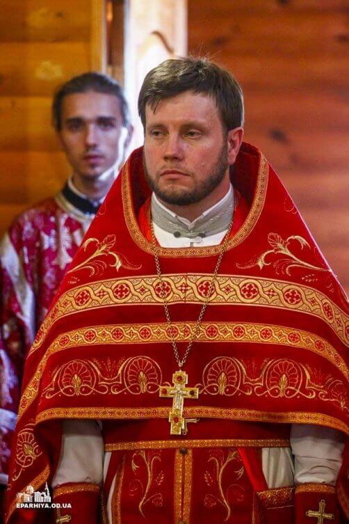

Настоятель
Прот. Святослав Владимирович Минаев
Родился 18 октября 1961 года в городе Ново-Ждановка Донецкой области. Тезоименитство 6 мая. В 1991 году окончил Одесскую Духовную Семинарию, в 1996 году – Киевскую Духовную Академию. За диссертацию на тему: «Монотеизм – как первоначальная форма религиозного сознания» Ученым Советом КДА удостоен ученой степени кандидата богословия. 23 июня 1996 года рукоположен в сан диакона, 7 июля – в сан иерея митрополитом Одесским и Измаильским Агафангелом. С 21 августа 1996 года – преподаватель семинарии. В 1998 году возведен в сан протоиерея. Настоятель храма святого великомученика Димитрия Солунского (Северное кладбище г. Одессы). Преподает Введение в философию, История Руси-Украины (1-й курс).
2003 – Грамота Блаженнейшего митрополита Киевского и всея Украины
2005 – Патриаршая грамота
2005 – Архипастырская грамота

Клирик
Прот. Анатолий Дмитриевич Римко
Родился 18 октября 1961 года в городе Ново-Ждановка Донецкой области. Тезоименитство 6 мая. В 1991 году окончил Одесскую Духовную Семинарию, в 1996 году – Киевскую Духовную Академию. За диссертацию на тему: «Монотеизм – как первоначальная форма религиозного сознания» Ученым Советом КДА удостоен ученой степени кандидата богословия. 23 июня 1996 года рукоположен в сан диакона, 7 июля – в сан иерея митрополитом Одесским и Измаильским Агафангелом. С 21 августа 1996 года – преподаватель семинарии. В 1998 году возведен в сан протоиерея. Настоятель храма святого великомученика Димитрия Солунского (Северное кладбище г. Одессы). Преподает Введение в философию, История Руси-Украины (1-й курс).
2003 – Грамота Блаженнейшего митрополита Киевского и всея Украины
2005 – Патриаршая грамота
2005 – Архипастырская грамота